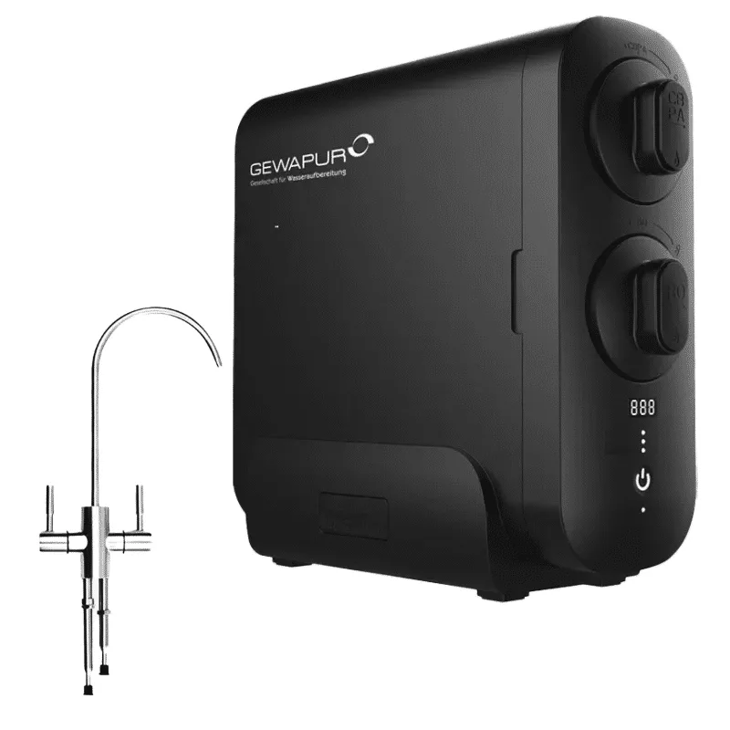

Direct Flow RO
Gewapur Osmo Star 2.0
Die verlinkte Gewapur-Kategorie führt statt „RO Comfort“ die tanklose 800-GPD-Unterwasseranlage Osmo Star 2.0; der Katalog verwendet deshalb den bestätigten offiziellen Modellnamen.
Preis auf Anfrage
Technische Daten
| Offizieller Modellname | Osmo Star 2.0; „RO Comfort“ ist auf der verlinkten Seite nicht aufgeführt |
| Technologie | Direct-Flow-Umkehrosmose |
| Membran | 800 GPD |
| Vorratstank | Nein |
| Installation | Untertisch |
| Filterwechsel | Schnellwechselsystem |
| Einsatz | Trinkwasser im Privathaushalt |
| Herstellung | Made in Germany laut Kategorieseite |
| Filterintervalle | Vorfilter typischerweise 6–12 Monate; Membran 2–4 Jahre laut Kategorieseite |
Datenhinweis
Die Angaben stammen aus öffentlich zugänglichen Hersteller- und Produktunterlagen. Nicht veröffentlichte Werte wurden nicht geschätzt. Änderungen und Modellvarianten sind möglich.